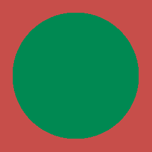
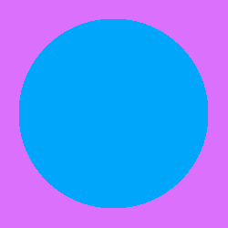
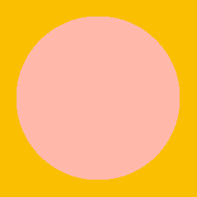
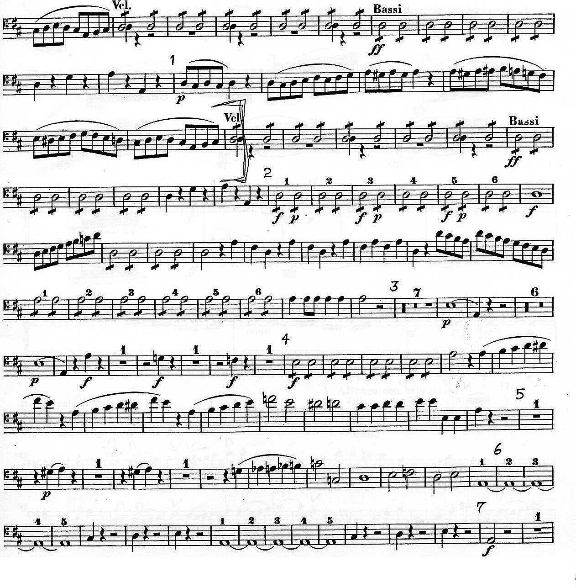
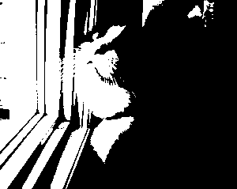
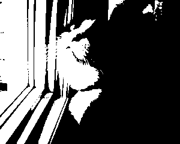
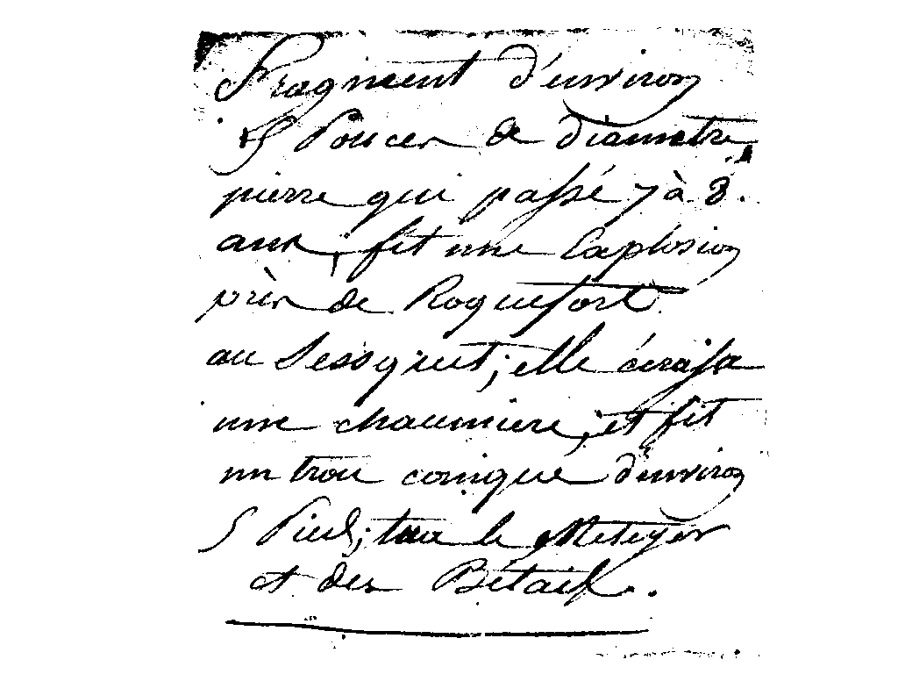
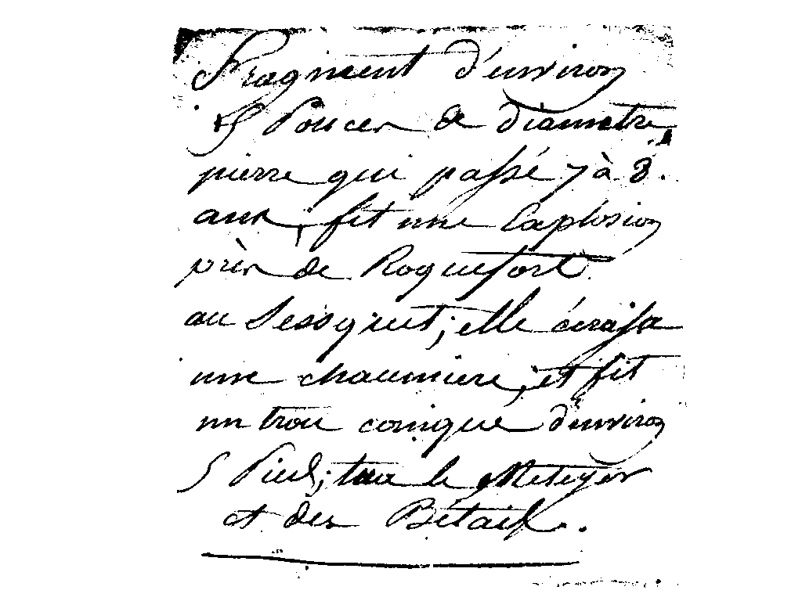

Threshold Value = 126.
This was chosen because at this threshold level the writing is still fully visible from the original image. Where as if the thresh value decreases the writing tends to break apart. Thus there is not one single "best" value that can be chosen, rather a range of values that leaves legibility of the text.
3. Set of Circles Within Squares



4. Enhanced Edges
Original
Enhanced

In the enhanced image, you can see that the sharpened areas brings out more "blur" or spotty areas when sharpened.
 



 
